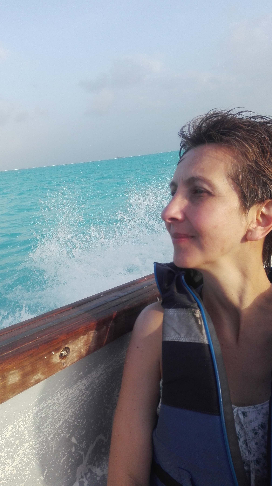

Bienvenido a Barnasha
Hagámoslo simple



Un pensamiento es el origen de todo lo que logramos. Ayudar a otros es lo que da sentido a la vida... por esa razón hace 9 años inicié esta travesía sin retorno; la terapia física fue la puerta que abrió mi mente y capacidades hacia “el movimiento”. Experimentar este concepto en su extensión, me puso en el camino de comprender que finalmente somos energía y fluimos como el universo, en transformación y expansión. Hoy trabajo como terapeuta alternativa y Coach de Vida, la experiencia de disponer de ambas disciplinas es el principio de integralidad y oportunidad que deseo transmitir: cualquier momento es propicio para tomar acción, “moverse” y hacer cambios en la vida que lleven a disfrutar de metas, sueños y propósitos. La OMS define la salud como un estado "completo" de bienestar, es decir una situación temporal que claramente se manifiesta en respuesta a las circunstancias por las que atraviesa el individuo; hacer énfasis e interpretación de la palabra “completo” como algo entero, que no se puede dividir, significa que la persona donde quiera que esté, es cuerpo, emoción, mente y espíritu. La integralidad humana, viaja entre el mundo de lo intangible, del espíritu, del pensamiento a las emociones, a lo que se puede oír, oler, tocar, sentir, ver, medir... Desde esa perspectiva se entiende que la sanación se da al mantener en balance el bienestar del ser individual y social en estos componentes. Entonces, para cada caso particular, Barnasha traza un plan de terapias en conjunto con el paciente y sus necesidades, con objetivos definidos y tareas. Trabajando juntos en el cambio que él o ella busca y en trascender la razón por la cual no lo ha logrado hasta el momento. Con las bases, guía, soporte y apoyo para tomar acción, se fortalecen antiguos y nuevos recursos en enfocar, resolver, adaptar y cumplir objetivos. Restableciendose rápida y definitivamente para que el individuo obtenga todo lo que necesita para lograr lo que se proponga en salud, comodidad, calma, serenidad y tranquilidad.
El hombre no puede transformarse sin sufrir pues él es tanto el escultor como el mármol de su destino"
Alexis Carrel, Nobel de mediciona 1912
Con 5 años de experiencia en ejercicio permanente y actualizado de prácticas terapéuticas alopáticas con medios físicos: Ultrasonido, terapia pasiva, termoterapias; biofeedback y ejercicio terapéutico, masaje terapéutico y relajante, teniendo como objetivo la recuperación, atención y cuidado total del paciente. A este sólido sistema Barnasha ha incorporando una amplia gama de técnicas y terapias de la medicina oriental (llamadas también complementarias o alternativas) que han demostrado por milenios su eficacia en el contexto curativo y de rehabilitación. Dando un valor agregado a los tratamientos y llevando un beneficio integral al ser humano (cuerpo, mente, emociones y espíritu). Barnasha te ofrece la posibilidad de co-crear un programa de salud y bienestar, con todos los cuidados que requieres durante tus tratamientos, terapias y procesos de rehabilitación integral para la recuperación de la salud emocional y/o física. Te preguntarás ¿cómo hacemos del mundo un mejor lugar? Creemos que el mundo merece libertad de pensamiento y accionar lejos de la enfermedad, del dolor, del miedo y del desamor. Buscamos que el individuo se acerque a la conciencia y acompañarlo en su despertar en el ahora.
Técnicas de la medicina tradicional china, tratamientos preventivos y curativos que trabajan profundamente el flujo delCHI, fuerza activadora de la vida, para restablecer el equilibrio y salud de cuerpo, mente y espíritu.
Las innumerables técnicas del coaching transformacional de vida promueven el bienestar en todos los aspectos de la vida, aplicar un programa integral que inspire confianza, le brinde al paciente destrezas empoderantes donde se creen nuevas conexiones neuronales para dar lugar a nuevos patrones de acción en su proceso de recuperación y sanación.
Técnica de sanación inducida por imanes con efectos magnéticos sobre el paciente. Esta práctica ha probado su alta eficiencia en la regeneración de tejido óseo y un estimulo sobre los procesos de alimentación celular. Se destaca el efecto analgésico, antiinflamatorio, la relajación muscular y la acción sobre el tejido oseo.
Medicina manual etérica, técnica vibracional que trabaja sobre el campo energético del paciente manejando la armonía de la forma, con la finalidad de restaurar la salud física, emocional, mental y espiritual.
Servicio sólo en nuestra sede en Cedritos
Tel: 3204044081
Bogotá, Colombia